Mode d'emploi
KR Provador. Dernière mise à jour : 25 septembre 2026.
Ler em português · Assistance (en anglais) · Politique de confidentialité (en anglais)KR Provador garde vos vêtements sur votre téléphone et vous montre comment ils vous vont. Vous photographiez vos pièces et votre corps, vous composez un look, et l'IA crée une image de vous portant ce look.
Premiers pas en 1 minute
- Dans l'onglet Mon corps, touchez De face, ajoutez une photo de vous en pied et touchez Enregistrer.
- Dans l'onglet Garde-robe, touchez + et ajoutez au moins deux pièces.
- Dans l'onglet Looks, touchez +, choisissez les pièces et touchez Créer.
- Touchez le look, puis Essayer avec l'IA.
La première fois que vous utilisez l'appareil photo, l'iPhone vous demande l'autorisation. Acceptez, sinon l'appareil photo ne s'ouvre pas.
Les 4 onglets
La barre en bas de l'écran a 4 onglets. Il n'y a pas d'onglet pour la cabine d'essayage : elle s'ouvre quand vous touchez un look.
- Garde-robe (cintre) : vos vêtements.
- Mon corps (silhouette dans un cadre) : vos photos du corps et Mes infos.
- Looks (petites étoiles) : créer des looks, voir les suggestions et l'historique. C'est d'ici que s'ouvre la cabine d'essayage.
- Réglages (roue dentée) : abonnement, confidentialité et sauvegarde.
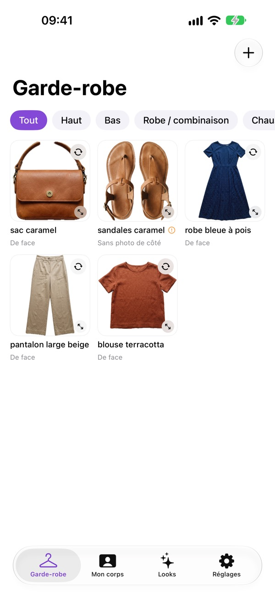
Garde-robe
Ajouter une pièce
1Ouvrez l'écran Nouvelle pièce
Touchez +, en haut à droite. L'écran Nouvelle pièce s'ouvre.
2Choisissez la catégorie et le nom
Dans Catégorie, choisissez Haut, Bas, Robe / combinaison, Chaussures, Veste / manteau ou Accessoire. La catégorie détermine les deux photos que l'app vous demandera. Dans Nom (ex. : robe longue noire), écrivez un nom facile à reconnaître.
3Photographiez le devant
Faites défiler jusqu'à De face. Touchez Appareil photo pour prendre la photo maintenant, ou Photos pour utiliser une photo que vous avez déjà. Dans Prise de vue, indiquez comment la pièce a été photographiée : À plat, Sur mannequin, Sur cintre ou Portée par quelqu'un.
4Attendez le détourage
Attendez que le message Détourage de la pièce... disparaisse. L'app retire le fond toute seule et ne garde que le vêtement.
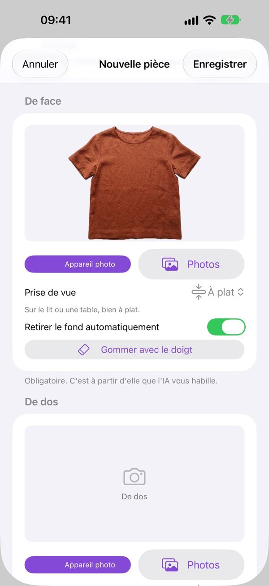
5Faites de même pour le dos
Refaites tout dans la partie De dos. Sans photo de dos, l'IA invente ce qu'elle ne voit pas.
Pour les chaussures, l'app demande Du dessus, un peu de face et De côté. Pour un accessoire, De face et De côté ou ouvert.
6Vérifiez la couleur et l'occasion
Remontez jusqu'à Couleur et occasion. L'app a déjà coché la couleur lue sur la photo. Si elle n'est pas bonne, touchez une autre pastille.
Activez Pièce imprimée si la pièce a un motif. Dans Quand la porter, choisissez Sport, Quotidien, Travail ou Soirée. L'app s'en sert pour vous suggérer des looks.
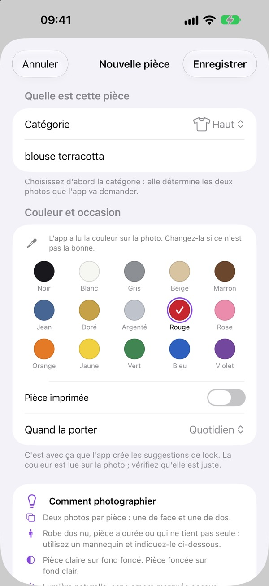
7Enregistrez
Touchez Enregistrer, en haut à droite. La pièce apparaît dans l'onglet Garde-robe.
Si le détourage n'est pas réussi
1Fond proche de la couleur du vêtement
Si un message orange apparaît, comme « Vêtement clair sur fond clair », le mieux est de reprendre la photo sur un fond d'une couleur bien différente de celle de la pièce.
2Le détourage a rogné une partie du vêtement
Désactivez Retirer le fond automatiquement. Pour les photos Sur mannequin et Portée par quelqu'un, cet interrupteur est désactivé par défaut, car l'IA sait ignorer le mannequin et la personne.
3Gommez les restes avec le doigt
Touchez Gommer avec le doigt et passez le doigt sur ce qui n'est pas le vêtement : cintre, ombre ou morceau de mannequin.
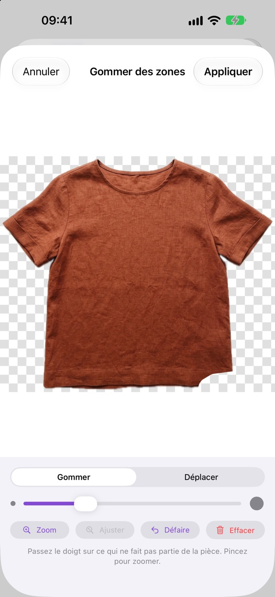
4Utilisez les outils de la gomme
Le curseur règle l'épaisseur du trait. Zoom agrandit, Ajuster affiche de nouveau l'image entière, Déplacer fait glisser l'image, Défaire annule le dernier trait et Effacer les annule tous. Touchez Appliquer pour garder le résultat.
Voir et gérer vos pièces
1Affichez la pièce en plein écran
Touchez une pièce. Elle s'ouvre en plein écran, côté face. En bas, De face et De dos permettent de passer d'un côté à l'autre. Écartez deux doigts pour agrandir.
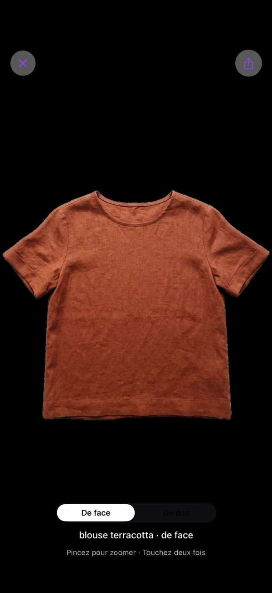
2Retournez la pièce dans la grille
Le petit bouton avec deux flèches en cercle, dans le coin de la carte, retourne la pièce sur place.
3Repérez ce qui manque
Un point d'exclamation orange signale qu'il manque la deuxième photo. Sur une blouse, on lit « Sans photo de dos ». Sur des chaussures, « Sans photo de côté ».
4Ouvrez le menu de la pièce
Touchez la pièce et gardez le doigt dessus. Le menu s'ouvre avec Modifier la pièce, Corriger le détourage de face, Corriger le détourage de dos, Ajouter aux favoris et Supprimer.
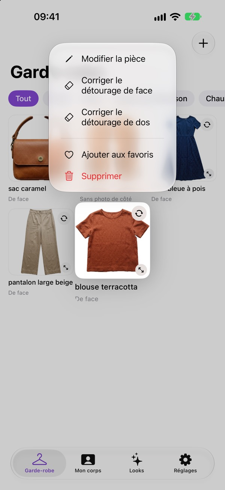
5Modifiez au besoin
Dans Modifier la pièce, vous changez les photos, ajoutez la photo qui manque et modifiez le nom, la catégorie et la couleur. Relire la couleur sur la photo relance la détection de la couleur. À la fin, touchez Enregistrer.
6Filtrez et mettez en favori
Les boutons en haut de la grille, comme Tout et Haut, montrent une catégorie à la fois. Les pièces favorites apparaissent plus souvent dans les suggestions.
Mon corps
Les 4 photos
1Ajoutez les photos
L'onglet montre 4 cadres : De face, De dos, Profil gauche et Profil droit. Touchez un cadre, choisissez Appareil photo ou Photos, puis touchez Enregistrer.
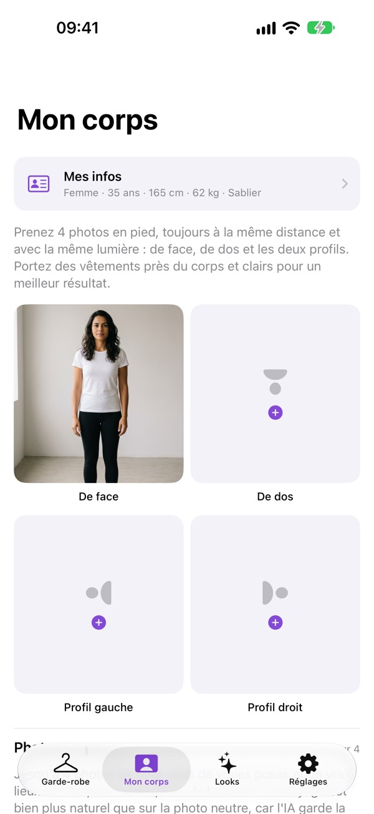
2La photo de face d'abord
La photo De face est la plus importante : c'est celle que la cabine d'essayage choisit d'office comme base. Les autres servent à essayer de dos et de profil.
3Changez ou retirez une photo
Pour la changer, touchez le cadre et choisissez une autre photo. Pour la retirer, touchez Supprimer cette photo.
Quelle photo fonctionne le mieux
- En pied, de la tête aux pieds, avec le visage bien visible.
- Vêtements près du corps et clairs, debout, dans une posture naturelle.
- Les 4 photos à la même distance et avec la même lumière.
- Demandez à quelqu'un de prendre la photo. Ou utilisez le retardateur de l'app Appareil photo de l'iPhone, puis choisissez la photo avec Photos.
Mes infos
1Indiquez vos mesures
Touchez Mes infos, en haut de l'onglet Mon corps. Remplissez Genre (écrivez-le comme vous voulez), Âge, Taille (en cm) et Poids (en kg). Rien n'est obligatoire.
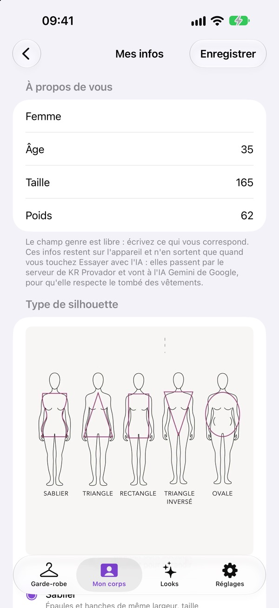
2Choisissez la silhouette
Dans Type de silhouette, touchez le dessin pour l'agrandir et cochez celle qui vous ressemble le plus : Sablier, Triangle, Rectangle, Triangle inversé ou Ovale. En cas de doute, laissez Je ne sais pas encore.
3Enregistrez
Touchez Enregistrer. Ces infos aident l'IA à respecter vos mesures.
Photos en pose
1Ajoutez une pose
Plus bas dans l'onglet, dans Photos en pose, vous pouvez garder jusqu'à 4 photos de vous en situation, dans de vrais décors : assise, en train de marcher, en soirée. Touchez Ajouter une pose et choisissez la photo.
2Donnez un nom et indiquez le côté
Écrivez un nom, comme « Soirée ». Dans Orientation, indiquez si vous êtes De face, De dos ou de profil. Touchez Enregistrer.
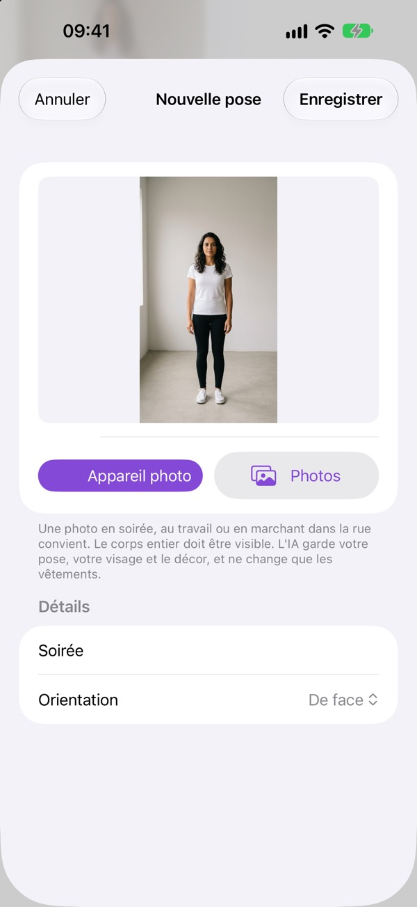
3Ce que l'IA fait de la pose
L'IA garde votre pose, votre visage et le décor, et ne change que les vêtements.
Looks
Créer un look
1Ouvrez Créer un look
Dans l'onglet Looks, touchez +, en haut à droite. Écrivez un nom dans Nom du look (ex. : dîner vendredi).
2Choisissez les pièces
Touchez les pièces que vous voulez porter. La pièce choisie s'entoure d'une bordure de couleur. Touchez-la à nouveau pour la désélectionner.
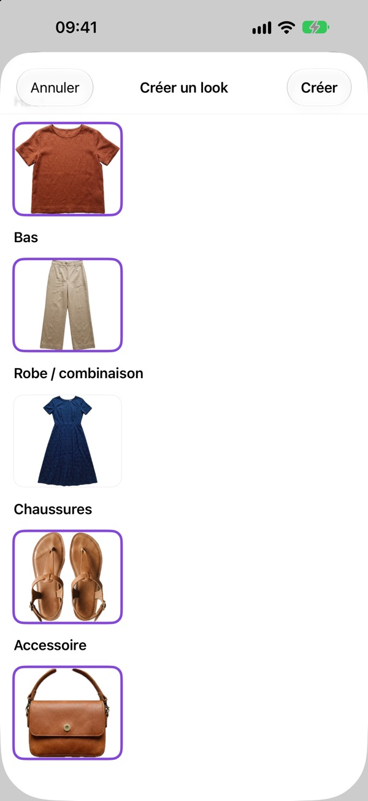
3Créez
Touchez Créer. Le look apparaît dans Mes looks.
Suggestions automatiques
1Demandez des suggestions
Touchez Suggérer des looks. L'app associe vos pièces selon la couleur, le motif et l'occasion, et explique chaque association.
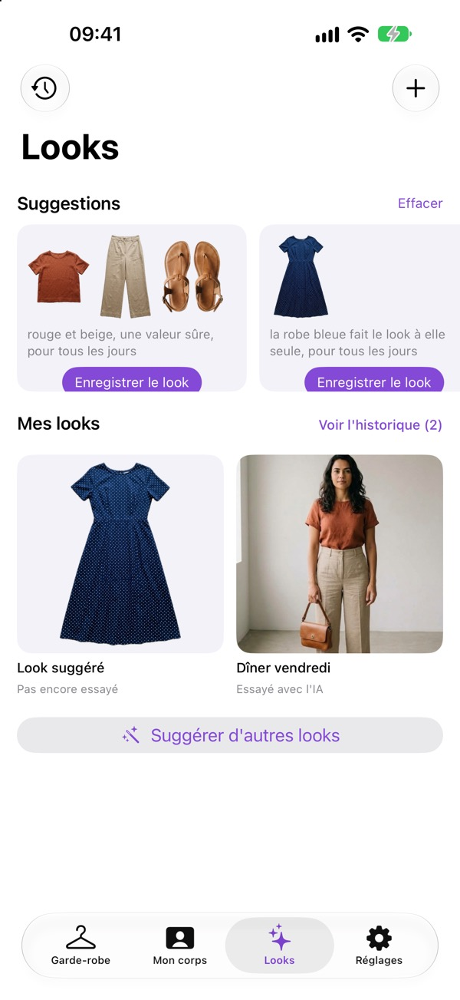
2Gardez celle qui vous plaît
Touchez Enregistrer le look. Pour en voir d'autres, touchez Suggérer d'autres looks. Effacer cache les suggestions.
3Les pièces dont l'app a besoin
Pour proposer des looks, l'app a besoin d'au moins 2 pièces dans la garde-robe, avec un haut et un bas, ou une robe. Si les pièces ne vont pas ensemble, l'app ne suggère rien. Voir Problèmes fréquents.
Mes looks et historique
1Consultez les looks récents
Dans Mes looks, vous voyez les 6 plus récents, avec Pas encore essayé ou Essayé avec l'IA en dessous. Touchez un look et gardez le doigt dessus pour Modifier le look, Ajouter aux favoris ou Supprimer le look.
2Ouvrez l'historique
Touchez Voir l'historique, ou l'horloge en haut à gauche. Les looks sont classés par jour. Filtrez par Tous, Favoris ou Essayés, ou utilisez la recherche Rechercher un look ou une pièce.
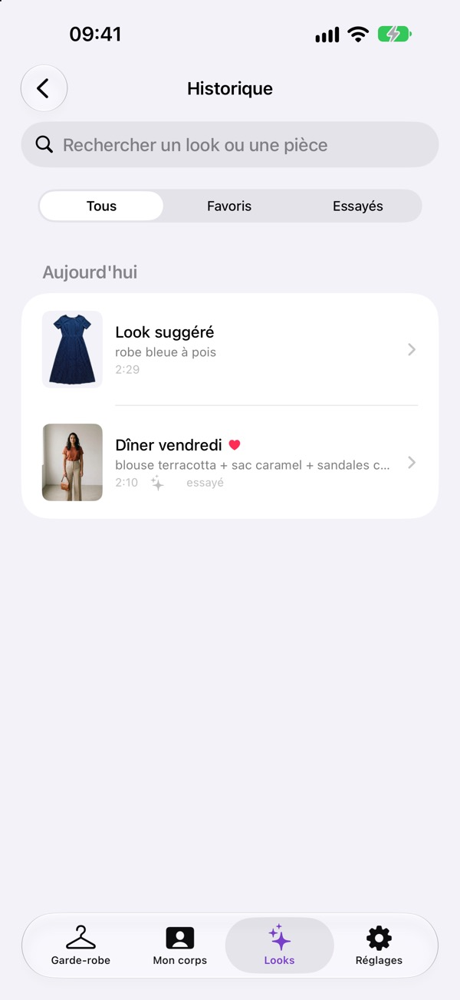
3Glissez pour plus d'options
Dans l'historique, faites glisser un look vers la gauche pour le supprimer, ou vers la droite pour le modifier ou le mettre en favori.
Cabine d'essayage
Ouvrir et préparer
1Ouvrez le look
Dans l'onglet Looks, touchez le look. La cabine d'essayage s'ouvre, avec le nom du look en haut.
2Choisissez la photo de base
Dans Photo utilisée comme base, touchez la photo sur laquelle l'IA va vous habiller. Ce peut être un des angles du corps ou une photo en pose. La photo choisie s'entoure d'une bordure de couleur.
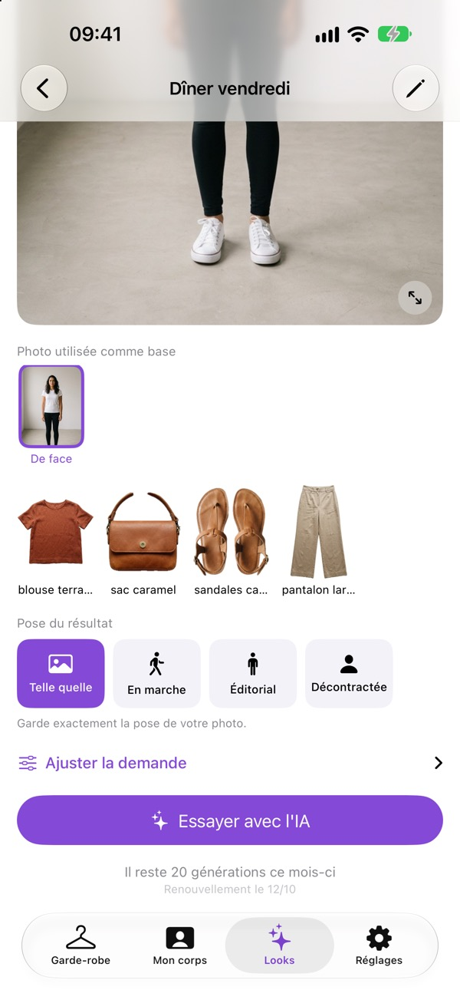
3Vérifiez les pièces
Juste en dessous, vous voyez les pièces du look. Pour les changer, touchez Modifier (le crayon), en haut à droite.
4Choisissez la pose
Dans Pose du résultat, choisissez Telle quelle, En marche, Éditorial ou Décontractée. Une phrase en dessous explique chacune.
Première fois : votre accord
1Lisez ce qui est envoyé
La première fois que vous touchez Essayer avec l'IA, l'écran Avant d'essayer avec l'IA s'ouvre. Il montre ce qui est envoyé et à qui. Cet écran revient chaque fois que l'autorisation est désactivée dans Réglages.
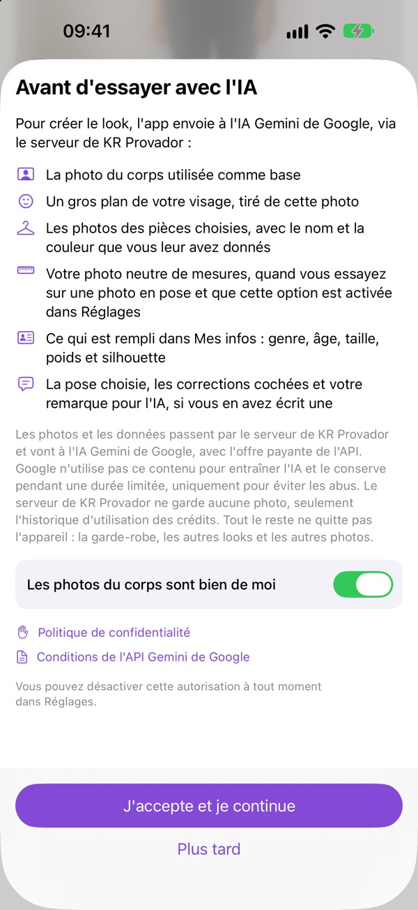
2Donnez votre accord
Activez Les photos du corps sont bien de moi et touchez J'accepte et je continue. La génération démarre toute seule. Plus tard ferme l'écran sans rien envoyer.
Essayer le look
1Touchez Essayer avec l'IA
Le message « L'IA vous habille... » apparaît. Cela prend de 10 à 40 secondes.
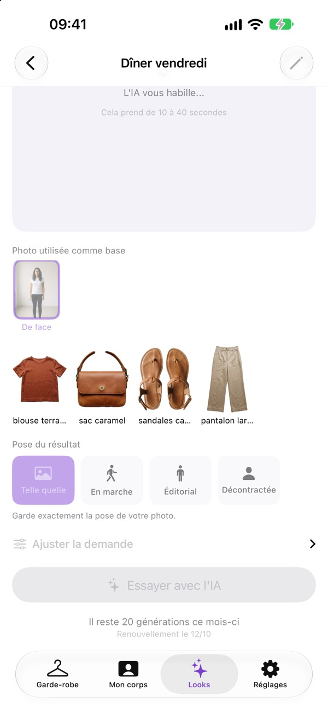
2Vérifiez le solde
Sous le bouton, vous voyez votre solde : le nombre de générations qu'il vous reste ce mois-ci. Chaque essai en utilise une. En cas d'erreur, elle est recréditée sur votre solde.
3Découvrez le résultat
Le résultat apparaît dans le grand cadre. Touchez-le pour le voir en plein écran et écartez deux doigts pour agrandir.
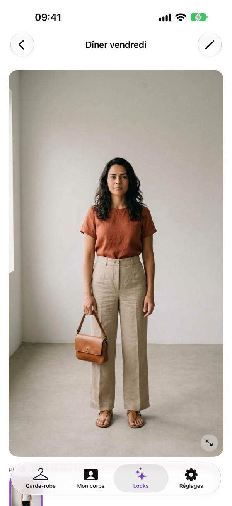
4Le résultat ne vous plaît pas ? Générez à nouveau
Après le premier résultat, le bouton devient Générer à nouveau. Chaque essai utilise 1 génération.
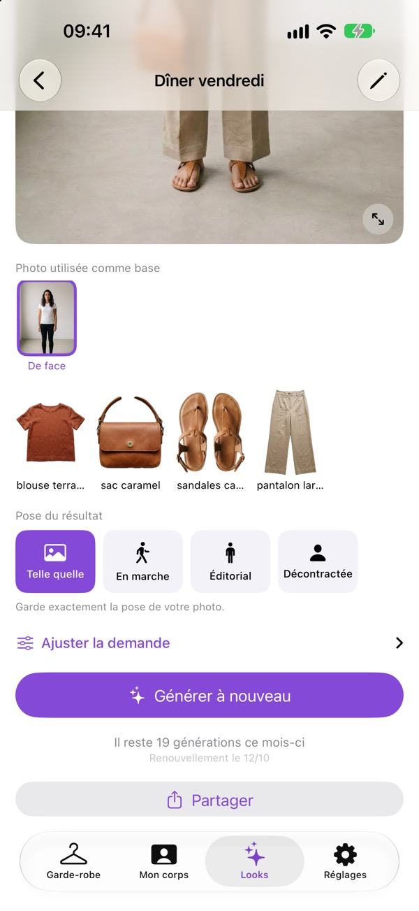
Corriger ce qui n'a pas fonctionné
1Cochez l'erreur
Touchez Ajuster la demande. Dans la partie Qu'est-ce qui n'allait pas la dernière fois ? cochez le ou les problèmes : Mon visage a changé, Mon corps a changé, Le mannequin apparaît, Mis à l'envers, Le décor a changé, La pièce a changé, Mauvaise longueur ou Mauvaise couleur.
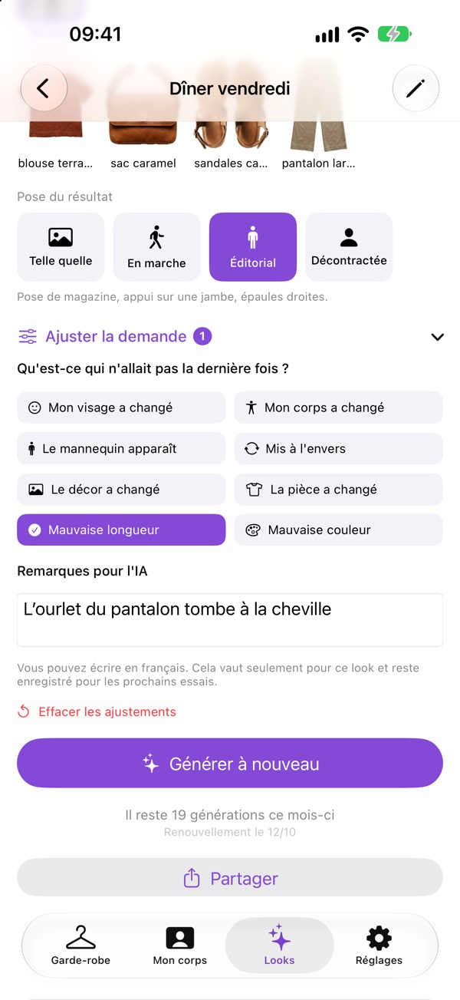
2Écrivez à l'IA
Dans Remarques pour l'IA, écrivez ce que vous voulez, en français, par exemple « l'ourlet du pantalon tombe à la cheville ».
3Réessayez
Touchez Générer à nouveau. Si vous avez quitté le look puis l'avez rouvert, le bouton s'appelle Essayer avec l'IA. Les corrections restent enregistrées dans ce look, et Effacer les ajustements les supprime toutes.
Garder et partager
1Enregistrez ou envoyez l'image
Touchez Partager, sous le bouton. Pour la garder dans l'app Photos, choisissez Enregistrer l'image. La première fois, l'iPhone demande l'autorisation d'enregistrer dans Photos. Acceptez, sinon l'image n'est pas enregistrée. Pour l'envoyer, choisissez WhatsApp, Messages ou une autre app.
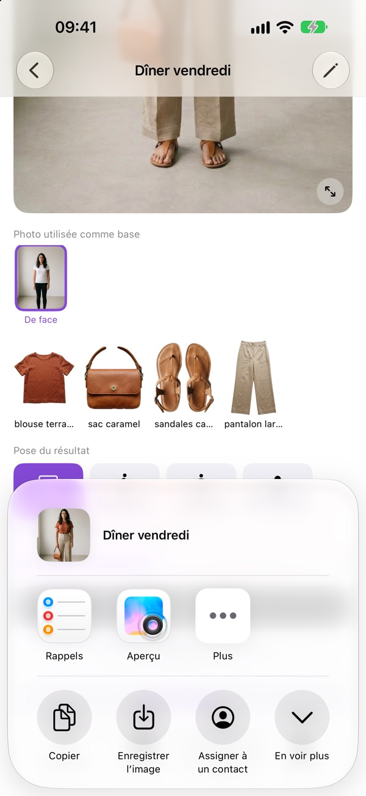
2Partagez un autre jour
Vous revenez au look plus tard ? Touchez l'image et utilisez le bouton de partage, en haut à droite du plein écran.
3Enregistrez les images réussies avant d'en générer une autre
Chaque look ne garde que le dernier résultat. Une nouvelle génération remplace la précédente, et changer les pièces du look efface le résultat. Enregistrez d'abord les images que vous voulez garder.
Abonnement et crédits
Comment ça marche
1Ce qui est gratuit
La garde-robe, les photos, les looks et les suggestions sont gratuits. Seule la fonction Essayer avec l'IA nécessite un abonnement. Sans abonnement, ce bouton est remplacé par S'abonner pour essayer.
225 générations par mois
L'abonnement est annuel, avec renouvellement automatique, et donne droit à 25 générations par mois. Les générations non utilisées ne sont pas reportées sur le mois suivant.
37 jours gratuits
Lors de votre premier abonnement, vous profitez de 7 jours gratuits avec 5 générations, grâce au bouton Commencer les 7 jours gratuits. C'est valable une seule fois par compte Apple. Après les 7 jours, l'abonnement annuel est facturé. Pour ne pas payer, résiliez au moins 24 heures avant la fin des 7 jours.
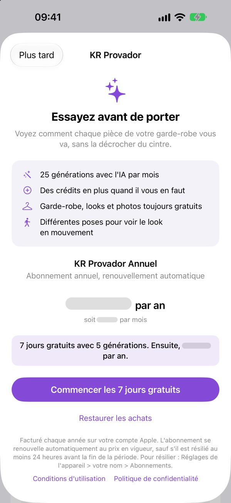
4Abonnez-vous
Dans Réglages, touchez S'abonner. Ou touchez S'abonner pour essayer dans la cabine d'essayage.
Crédits et compte
1Achetez plus de générations
Vous n'avez plus de générations ce mois-ci ? Dans Réglages, touchez Acheter des crédits et choisissez un pack de 10, 50 ou 100. Dans la cabine d'essayage, quand le solde est à zéro, le bouton devient Acheter des générations.
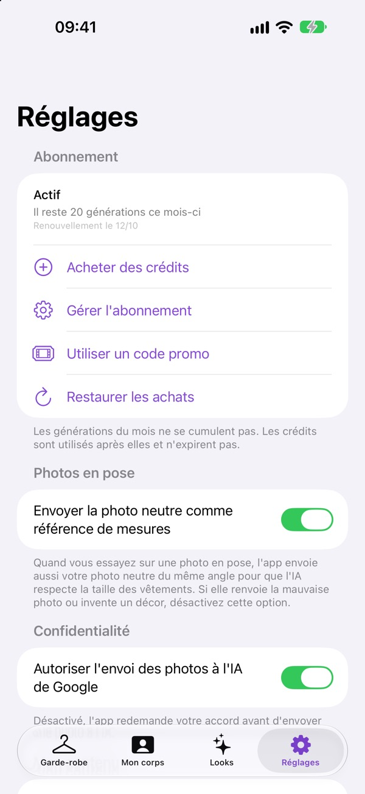
2Utilisez un code promo
Vous avez reçu un code promo ? Dans Réglages ou sur l'écran Crédits, touchez Utiliser un code promo : une fenêtre de l'App Store s'ouvre, dans laquelle vous saisissez le code. Les crédits du code promo sont valables avec un abonnement actif ou pendant l'essai gratuit. Sans abonnement, ils sont mis en attente et s'ajoutent au solde dès que vous vous abonnez ou commencez l'essai gratuit.
Bon à savoir sur les crédits
- L'achat de crédits nécessite un abonnement.
- L'app utilise d'abord les générations du mois, puis les crédits.
- Les crédits achetés n'expirent pas.
3Nouvel iPhone ?
Dans Réglages, touchez Restaurer les achats. Utilisez le même compte Apple que pour l'achat.
4Modifiez ou résiliez
Dans Réglages, touchez Gérer l'abonnement. Résiliez au moins 24 heures avant le renouvellement. En dehors de l'app : ouvrez Réglages sur l'iPhone, touchez votre nom, puis Abonnements.
Sauvegarde
Garder une copie de la garde-robe
1Pourquoi le faire
La garde-robe reste uniquement sur votre iPhone. Si l'app est supprimée sans sauvegarde, les pièces, les photos et les looks sont perdus. L'abonnement, lui, n'est pas perdu.
2Faites la sauvegarde
Dans Réglages, touchez Exporter la garde-robe. Quand « Fichier prêt » apparaît, touchez Envoyer le fichier et choisissez Enregistrer dans Fichiers ou AirDrop.
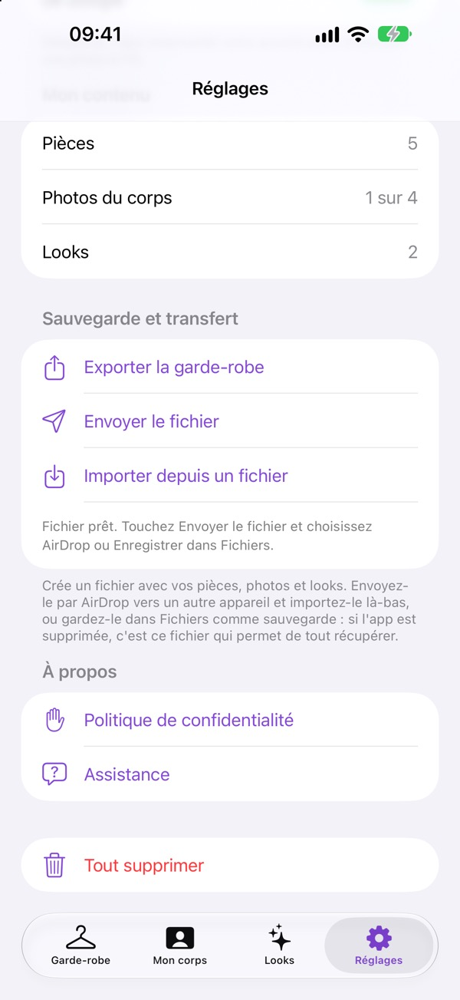
3Récupérez tout
Dans Réglages, touchez Importer depuis un fichier et choisissez le fichier. Fusionner avec ce que j'ai déjà ajoute seulement ce qui manque. Tout remplacer efface ce qui se trouve sur l'appareil et le remplace par le contenu du fichier.
4Tout supprimer
Tout supprimer, en bas de Réglages, retire les pièces, les photos, les looks et Mes infos. L'autorisation d'envoi à l'IA est aussi désactivée, et l'app vous redemande votre accord. L'abonnement et les crédits restent.
Quand faire une sauvegarde
- De temps en temps, après avoir ajouté plusieurs pièces.
- Toujours avant de changer d'iPhone.
Conseils pour de bonnes photos
Vêtements
- Pièce claire sur fond foncé. Pièce foncée sur fond clair.
- Lumière naturelle, sans ombre forte dessus.
- Fond uni : drap, sol ou mur.
- Pièce bien étalée et entière sur la photo, sans couper une manche ni l'ourlet.
- Toujours les deux photos : devant et dos.
- Dos nu, pièce ajourée ou qui ne tient pas seule : utilisez un mannequin et cochez Sur mannequin.
- Chaussures : la paire ensemble, du dessus et un peu de face. Puis une chaussure de profil, pour montrer la hauteur du talon.
- Vérifiez la couleur cochée. C'est elle qui guide les suggestions.
Corps
- En pied, de la tête aux pieds, avec le visage visible et bien éclairé.
- Vêtements près du corps et clairs, fond simple.
- Les 4 photos à la même distance et avec la même lumière.
- Sur les photos en pose, tout le corps doit apparaître. Indiquez bien de quel côté vous êtes tournée, dans Orientation.
Problèmes fréquents
Pourquoi le bouton Essayer avec l'IA est-il grisé ?
Il manque la photo de base, ou le look n'a pas de pièces. Ajoutez la photo De face dans Mon corps, ou touchez Modifier dans la cabine d'essayage et choisissez les pièces.
Le message « Il manque votre photo du corps » apparaît. Que faire ?
Dans l'onglet Mon corps, ajoutez au moins la photo De face.
Le détourage est raté ou a rogné le vêtement. Que faire ?
Reprenez la photo sur un fond dont la couleur contraste avec celle de la pièce. Ou désactivez Retirer le fond automatiquement, ou utilisez Gommer avec le doigt.
Comment corriger le détourage d'une pièce déjà enregistrée ?
Touchez la pièce, gardez le doigt dessus et choisissez Corriger le détourage de face ou Corriger le détourage de dos.
Un mannequin ou un cintre apparaît sur le résultat. Comment l'enlever ?
Dans Ajuster la demande, cochez Le mannequin apparaît et générez à nouveau. Vérifiez aussi que la pièce est bien réglée sur Sur mannequin ou Sur cintre, selon la photo.
L'IA a changé mon visage ou mon corps. Que faire ?
Remplissez Mes infos. Dans Ajuster la demande, cochez Mon visage a changé ou Mon corps a changé. Utilisez une photo avec le visage bien éclairé.
Pourquoi le vêtement est-il porté devant derrière ?
Ajoutez la photo de dos de la pièce et cochez Mis à l'envers. Sur une photo en pose, vérifiez Orientation.
L'IA a changé le décor de ma photo en pose. Comment l'éviter ?
Cochez Le décor a changé. Si le problème persiste, dans Réglages, désactivez Envoyer la photo neutre comme référence de mesures.
Le message « Trop de générations en peu de temps » apparaît. Qu'est-ce que c'est ?
Il y a une limite par heure. Attendez quelques minutes et réessayez.
Un message d'erreur indique « La génération n'a pas été décomptée ». Ai-je perdu la génération ?
Non. Touchez à nouveau le bouton pour réessayer. Si l'erreur revient, envoyez le message à l'assistance, avec l'heure à laquelle c'est arrivé.
Le message « Impossible de confirmer votre abonnement » apparaît. Que faire ?
Dans Réglages, touchez Restaurer les achats.
Pourquoi le bouton Suggérer des looks ne propose-t-il rien ?
Avec moins de 2 pièces dans la garde-robe, le bouton est grisé. Avec 2 pièces ou plus, l'app a besoin d'un haut et d'un bas qui vont ensemble, ou d'une robe. Si les pièces ne vont pas ensemble (deux imprimés, deux couleurs vives ou des occasions très différentes, comme Sport et Travail), l'app ne suggère rien. Ajoutez d'autres pièces, de préférence dans des couleurs neutres, ou vérifiez Quand la porter sur chaque pièce.
Pourquoi le + de l'onglet Looks est-il grisé ?
Ajoutez au moins une pièce dans l'onglet Garde-robe.
Le résultat précédent a disparu. Peut-on le récupérer ?
Non. Chaque nouvelle génération remplace la précédente. Enregistrez les images réussies avec Partager puis Enregistrer l'image.
J'ai changé d'iPhone. Comment tout récupérer ?
Sur l'ancien iPhone, utilisez Exporter la garde-robe. Sur le nouveau, utilisez Importer depuis un fichier, puis Restaurer les achats.
L'app fonctionne-t-elle sans Internet ?
Oui, en grande partie. Seuls Essayer avec l'IA et les achats nécessitent une connexion Internet.
Confidentialité, en bref
- Vos photos, vos pièces et vos looks restent sur votre iPhone.
- C'est seulement quand vous touchez Essayer avec l'IA, et après avoir accepté l'avertissement, que des données sont envoyées à l'IA Gemini de Google, en passant par le serveur de KR Provador : la photo de base, un recadrage du visage, les pièces avec leur nom et leur couleur, Mes infos, la pose, les corrections et votre remarque. Avec une photo en pose, la photo neutre de mesures est aussi envoyée, si cette option est activée. Google n'utilise pas ces données pour entraîner l'IA et les conserve jusqu'à 55 jours, uniquement pour prévenir les abus. Le serveur ne conserve aucune photo.
- Vous pouvez désactiver l'envoi dans Réglages, avec l'interrupteur Autoriser l'envoi des photos à l'IA de Google.
Tous les détails sont dans la Politique de confidentialité (en anglais).
Contact
Encore une question ? Écrivez à krprovador@gmail.com, en français si vous voulez. Indiquez quel iPhone vous utilisez et ce qui s'est passé.
Voir aussi la page Assistance et la Politique de confidentialité, toutes deux en anglais. Dans l'app, elles se trouvent dans Réglages, dans la partie À propos.